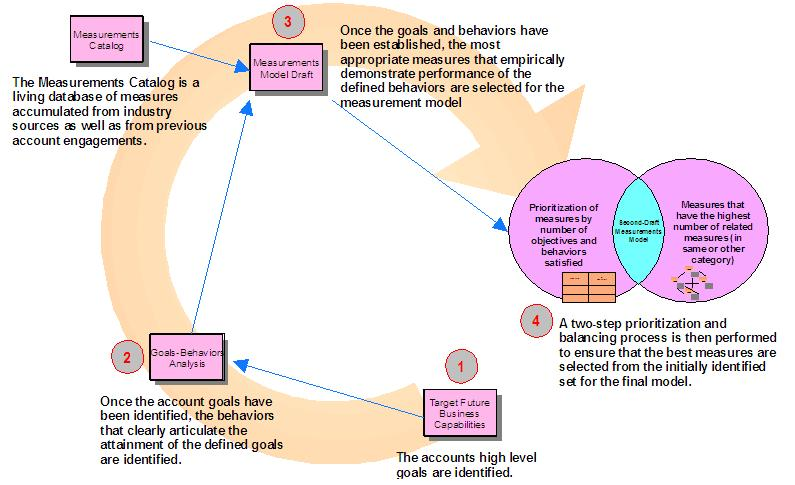

| Guideline: Developing Measurement Model |
 |
|
| Related Elements |
|---|
There are several industry-accepted techniques for developing a Measurement Model. Two of the most prevalent in recent history are the Goals-Questions-Metric approach and the Balanced Scorecard model approach. (See Section 8, References, for references to published information on these two approaches.) These approaches and others contribute to IBM’s Measurement Methodology, which produces a first-order, high-quality measurement model organizations and other IT contexts. The following diagram summarizes the IBM approach for building the Measurement Model: 
The IT organization goals are defined in the Goals-Behaviors table as shown in examples Articulate Behaviors Expected upon Achievement of Defined Goals The behaviors for each of the defined goals are defined and documented in the Goals-Behaviors mapping table shown in example. Map Behaviors Against Measurements Catalog The measurements catalog facilitates the identification of measurements that have been proposed and implemented in other IBM-managed ADM organizations. Prioritize Measures by Number of Behaviors Satisfied As part of building the measurement model, two techniques are used to help sort the measures in an order of most importance and most valuable to the organization, based on several criteria. The first technique is the prioritization by number of behaviors satisfied. A table such as the one shown in examples is built for each behavior and all of the measurement entities selected for the model. An X is placed in each cell where a measurement entity has a propensity to satisfy one or more behaviors (or eliminate one or more behaviors, if negative behavior modification or removal is the objective). Once the table is populated, a total for each column is derived from the number of Xs. This total represents the number of behaviors a particular measure satisfies (or negatively satisfies). Higher-priority measurement entities will correlate to the higher column totals. Completion of this table and its scoring concludes step one of the balancing and prioritization process. Prioritize Measures Based on Number of Related Measures The second step in achieving balance in the final Measurement Model occurs in prioritizing each measure based on the number of related measures with which it correlates. This prioritization step helps not only achieve a sense of balance, but also to identify those measures that have the greatest “bang” for the customer’s implementation “buck.” A table such as the one shown in examples is built in the course of the second step of balancing the Measurement Model. An X is placed in each cell where a measure has a related measure, and the sum of Xs is then computed for each column. Those measures that have the highest point value are considered most valuable since they satisfy the greatest number of desirable behaviors (or tend to eliminate undesirable behaviors) and correlate with the highest number of related measures. The last step in the process is to pull together the results from tables developed in examples. It is simplest to select those measures in the top “half” of each table (as defined by the mean of the point values assigned for each table). However, there may be instances where a measure is very specific – and, as such, does not have a high point value – but is critical to the target organization. One must take into consideration these specific measures when evaluation and prioritizing measurements. The resulting measures can be placed in the final version of the goals-behaviors-measures table in examples. |
| © Copyright IBM Corp. 1987, 2012 All Rights Reserved Property of IBM These materials are intended only for use as part of an IBM engagement |